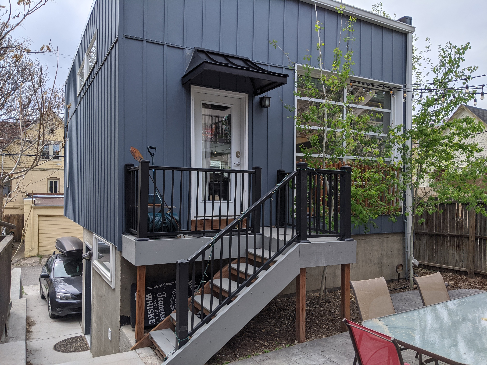
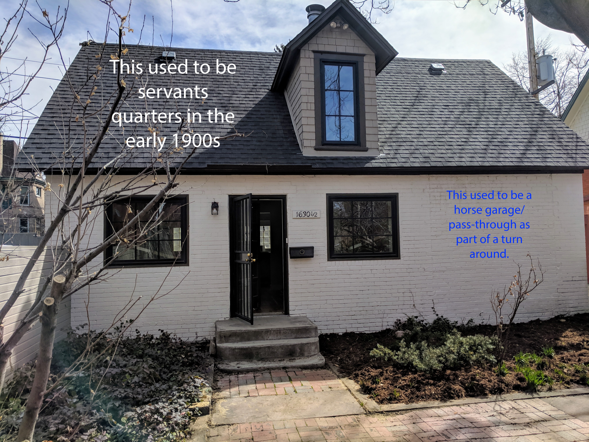

As a self-starter with wide ranging experience, my objective is to solve challenging puzzles, build interesting things, further my existing knowledge of technologies and cloud solutions, and develop strong colleague and client relationships.
- Blog
-
A novice's guide to Forrest Brazeal's 'a cloud resume challenge'
About me:
Ever since college (the last 10 years), I have been working in the very traditional fields of oil & gas and construction. As the son of an electrician (I kid that I hold the record for longest time being an electrician’s apprentice in Colorado), I am aquainted with the beauty and challenge of the hands-on nature of trades, building, how things work, and real life problem solving. Around 5 years ago, when my current job moved to Tulsa, Oklahoma, I had a unique opportunity to take a risk and throw myself into my biting curiosity with small backyard carriage homes often behind historic homes and what is required to build modern-day versions of them here in Denver. In a city with a continued housing shortage, I have loved getting to create new housing options in pre-existing spaces and creating healthier, more vibrant urban ecosystems, in these very under appreciated old neighborhoods.
 
Rewind a little bit though, and my first passion has always been technology. Althrough high school and college, I was more known as a tech guy in my extended family, helping family members make websites for their small businesses, building a small CNC wood routing machine, tinkering with arduinos, configuring countless amounts of wifi networks, and like many other people in tech, fondly addressing the plague of calls from loved ones of "my <insert tech here> is not working". So when my small carriage house construction business plateaued during the pandemic, it became apparent that this would be the ideal opportunity to transition back to tech and get back into the interesting innovations that are pushing our society forward.
How I found the challenge:
I am very fortunate to have a good friend, Mia, who works at Sumo Logic, and encouraged me to look at what is happening in cloud computing, infrastructure, and the trends of PaS and IaC. I have taken a couple AWS certifications (practitioner and cloud associate), and heard about the challenge through Corey Quinn’s podcast ‘This Week in AWS’. With my experience level (or lack there of), the services covered in this challenge and some hands on problem solving was too ideal to pass up. And on to my experience with Forrest Brazeal's Cloud Resume Challenge:
First of all, this is a great challenge that encompasses a lot of different fields in cloud computing like CI/CD, integrations, api gateway, lambda proxies, python, dynamodb, CORS, and manages to deliver all of that learning ultimately into 2 very elegant brief code files: a template.yaml file and a simple python lambda function. But holy smokes, in order to actually make those 2 pieces of code work and understand what needed to happen and how to configure it, was a very steep learning curve for myself and I imagine quite a few other newcomers as well.
I’ve organized the topics covered from my most difficult to easiest below:
Most to Least Difficult
1. CORS!
What the heck is CORS and what is this error response that my javascript frontend function keeps getting whenever I try to have it communicate with the API Gateway even for a simple ‘Hello World’? Turns out CORS stands for cross origin resource sharing and is a security feature that helps prevent cross site scripting attacks. When a browser sends an http request, it is good practice to provide headers which have a little more information about where the information is coming from and what it is doing, and it turns out it is basically required in any response from an API in order for a browser to not throw a CORS error. But wait there's more! Even when the root problem was my bad python lambda code resulting in a timeout and ‘server error’ in cloudwatch, it showed up as a CORS error on the browser. Not able to reach dynamodb and timeout? CORS error in the browser. The sheer number of timeouts I endured while trying to get this to work, coupled with the fact that lambda charges for compute time makes me quite scared for my upcoming AWS bill lol.
Protip: Make sure to have all API responses (including error responses) include headers (this is written in your lambda function when your API Gateway is set to just be a lambda proxy) so that not everything will just look like a CORS error to your browser.
2. Code validation, testing, and build
What a neat development to have Github Actions (use an apprunner) to mount my code and test it out before deployment? I remember the days when I would just upload my code by ftp, try it in the production environment and then have to make many code corrections on the fly lol. I’m glad this process has gotten a lot better, even if my code still isn’t perfect the first time, it’s great to have a shorter feedback loop to try and get to the working version as quickly as possible.
It took me a little longer than it probably should have to figure out how this works and how to configure it. Hint: just look in the .workflows file of github, but very cool to see how this has progressed!
3. SAM - Serverless Application Model
So you want cloud newcomers to skip CloudFormation and go straight to a transform that sits on top of CloudFormation made specifically for efficiently making serverless stacks? Actually, that was a brilliant idea. These yaml templates boil down what is a lot of options and screens in the AWS console to a few options that are all laid out very efficiently right next to each other in a yaml file. Pretty impressive what less than 100 lines of code can put together. Ended up loving this aspect of the challenge and really puts into perspective what is possible in more complex architecture stacks.
4. API Gateway and lambda proxy
I think I kept expecting this to be more complicated than it actually was. While trying to figure out the CORS errors mentioned above, I kept thinking that I just didn’t have something configured right in the API Gateway (as there are options there for CORS if you have the lambda proxy disabled). Turns out one simply has to leave it truly as a lambda proxy and do all of the coding (including headers) in the lambda script that the API Gateway proxies to. Easy once you get the hang of it.
5. Dynamo db and nosql schema
Coming from a relational database background, the idea of a primary key and just data is still an awkward concept for me. It makes sense that nosql dbs are a much faster and streamlined model, but it definitely takes some stretching of the ol noodle to figure out how to set up the primary key to be unique and still store all of your data in a way that can be quickly recalled or updated when needed. It was an additional perk to find out that the update CRUD also does a create in the case that the primary key doesn’t exist. It certainly didn’t come naturally, but this was a great intro dynamodb and forced me to get my hands dirty thinking through some of the finer points of how to make something like this work.
6. Permissions
Why isn’t my python lambda code able to access the database (and timing out and probably costing me a fortune in lambda compute time). Fast forward an hour or 2 later and of course it’s permissions.
Proud moments
Aside from the profound pride in ascending this steep learning curve and actually getting this IaC piece of code to work, I am taking a little too much pride in my visitor counter actually counting unique visitors (unique IPs really).
Big thanks to Forrest Brazeal for being a fantastic and well needed lighthouse for those of us trying to get into the cloud architecture world. Thank you! Logan